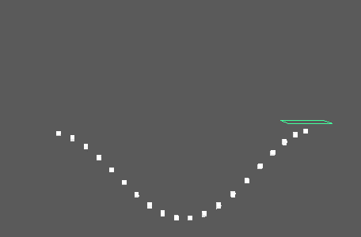

沿对称线反射 MASH 网络。自动创建 mirrorPlane 对象作为参照点。
对称
-
放置(Placement)
- 确定对称线。选项包括：
- 镜像平面(Mirror Plane)：使用 mirrorPlane 作为镜像平面的参照点。
- 边界框 + (Bounding Box +)：使用 MASH 网络的正边界。
- 边界框 - (Bounding Box -)：使用 MASH 网络的负边界。
-
轴(Axis)
- 确定镜像操作所围绕的轴。
-
启用旋转(Enable Rotation)
- 通过对称节点传递旋转值。
-
允许负比例(Allow Negative Scales)
- 允许 MASH 翻转几何体（例如，值 1 经过反射变为 -1）。
-
偏移位置(Offset Position)
- 改变镜像网络的位置。最初连接到 mirrorPlane 的平移。
强度(Strength)
-
强度(Strength)
- 同时减弱对所有对象的节点效果。
-
随机强度(Random Strength)
- 按随机顺序平滑地减弱所有对象的节点效果。
-
阶跃强度(Step Strength)
- 每次禁用一个对象的节点效果。
-
强度贴图(Strength Map)
- 确定输入文件（2D 纹理、动画纹理等）来控制该节点的效果的形状。
-
贴图投影轴(Map Projection Axis)
- 确定投影“强度贴图”(Strength Map)时所沿的轴。
-
贴图辅助对象(Map Helper)
- 显示用于在场景中交互放置“强度贴图”(Strength Map)的对象。可以在该字段上单击鼠标右键来创建新的辅助对象（平面）（如果不存在）。还可以使用鼠标中键将网格拖入此字段，或者单击鼠标右键连接选定网格。如果网格已连接，还可以单击鼠标右键来断开其连接或者将其显示在大纲视图中。
注： 为获得最佳结果，请将相同的纹理指定给“强度贴图”(Strength Map)和“贴图辅助对象”(Map Helper)（在创建新的辅助对象时将自动执行此操作）。